Švýcarsko, úřední vyměřování: bez vyměřování (nahoře, modře) a s vyměřováním (dole, červeně)
Řez zleva (A) doprava (B), ±10 m podél ulice, 10 px = 1 m. Silné čáry = okraje vozovky, tenké = ostatní hranice, žlutá = střed řezu, * = odhad. Ortofoto SWISSIMAGE © swisstopo.
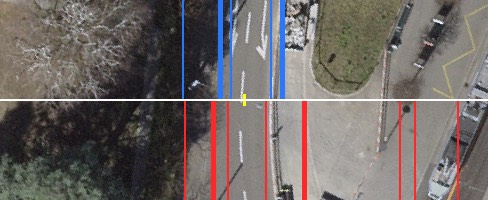
zu1 · Talstrasse (zurich)
bez vyměřování: chodnik 3.67* · krajnice 1.1* · pruh 4 · krajnice 1.1*
s vyměřováním: chodnik 2.8 · cyklopruh 1.5 · pruh 3.8 · pruh 3.8 · chodnik 9.6 · stromorad 1.5 · chodnik 4.3
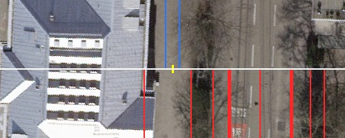
zu2 · (bez názvu) (zurich)
bez vyměřování: chodnik 2*
s vyměřováním: plocha 6.75 · zelen 3.2 · chodnik 2.35 · tramvaj_v_pruhu 4.5 · tramvaj_v_pruhu 4.5 · stezka_sdilena 2.75 · plocha 2.03
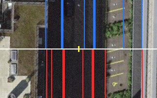
zu3 · Müllerstrasse (zurich)
bez vyměřování: chodnik 3.3* · pruh 4.6 · parkovani 2* · chodnik 6* · zelen 3.85*
s vyměřováním: plocha 0.95 · chodnik 2.45 · pruh 4 · parkovani 2* · chodnik 2.55 · plocha 7.6
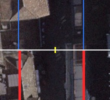
zu4 · Torgasse (zurich)
bez vyměřování: chodnik 13*
s vyměřováním: pruh 12.75
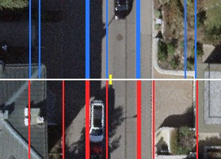
zu5 · Susenbergstrasse (zurich)
bez vyměřování: plocha 1.25* · chodnik 6* · pruh 2.54 · pruh 3.86 · chodnik 6* · zelen 1.3*
s vyměřováním: plocha 4.3 · chodnik 3.05 · pruh 2.53 · pruh 3.91 · chodnik 1.95 · plocha 5.45
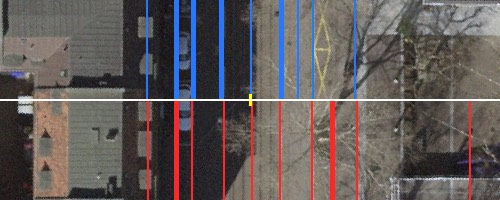
zu6 · Limmatstrasse (zurich)
bez vyměřování: chodnik 2.9* · parkovani 1.7 · chodnik 2.8* · tramvaj_v_pruhu 3 · tramvaj_v_pruhu 3 · chodnik 1.72* · stromorad 1.5 · chodnik 4.18*
s vyměřováním: chodnik 2.75 · parkovani 1.67 · pruh 3.2 · tramvaj_v_pruhu 2.77 · tramvaj_v_pruhu 2.83 · pruh 3.2 · parkovani 1.93* · chodnik 2.55 · plocha 11.28
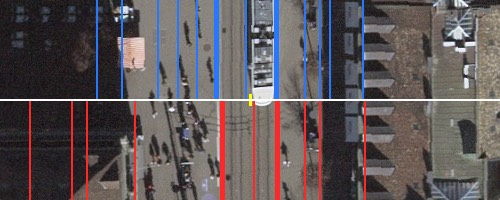
zu7 · Bahnhofstrasse (zurich)
bez vyměřování: chodnik 2.5* · nezname 3.6* · chodnik 2* · nezname 1.9* · chodnik 1.9* · tramvaj_v_pruhu 3 · tramvaj_v_pruhu 3 · chodnik 2.93* · stromorad 1.5 · chodnik 0.97* · plocha 3.35*
s vyměřováním: chodnik 4.16 · stromorad 1.5 · chodnik 4.82 · chodnik 8.75 · tramvaj_v_pruhu 3.12 · tramvaj_v_pruhu 2.38 · chodnik 2.78 · stromorad 1.5 · chodnik 4.47
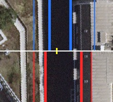
zu8 · Schanzeneggstrasse (zurich)
bez vyměřování: chodnik 3* · obsluzna 4.05* · chodnik 4.7*
s vyměřováním: chodnik 2.2 · obsluzna 7 · chodnik 1.95
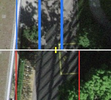
ba1 · (bez názvu) (basel)
bez vyměřování: chodnik 4.45* · obsluzna 4.4*
s vyměřováním: plocha 12.45
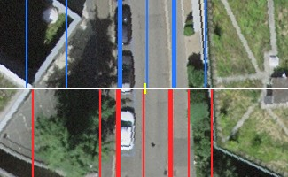
ba2 · Lautengartenstrasse (basel)
bez vyměřování: zelen 4.55* · chodnik 6* · pruh 3.05 · pruh 3.05 · chodnik 3.55*
s vyměřováním: plocha 7.6 · chodnik 2 · pruh 2.97 · pruh 2.97 · chodnik 2.15 · zelen 2.55
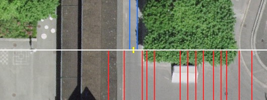
ba3 · (bez názvu) (basel)
bez vyměřování: stezka_sdilena 1.5*
s vyměřováním: chodnik 3.1 · cyklostezka 3.6 · plocha 0.93 · stromorad 1.5 · plocha 5.02 · stromorad 1.5 · plocha 1.66 · stromorad 1.5 · plocha 1.94 · stromorad 1.5 · plocha 1.15 · chodnik 2.5 · chodnik 2.45
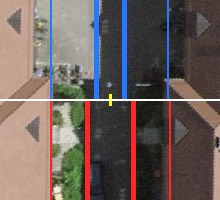
ba4 · Im Zimmerhof (basel)
bez vyměřování: plocha 4.55* · pruh 2.75 · plocha 4.45*
s vyměřováním: zelen 3.65 · pruh 4.6 · zelen 3.65
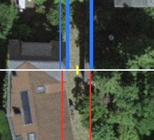
ba5 · (bez názvu) (basel)
bez vyměřování: chodnik 1* · obsluzna 3.35*
s vyměřováním: plocha 3.95
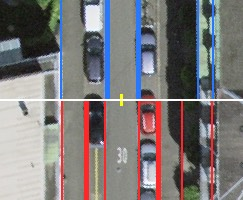
ba6 · Feierabendstrasse (basel)
bez vyměřování: chodnik 4.65* · pruh 3.1 · chodnik 6* · zelen 1.45*
s vyměřováním: chodnik 2.4 · parkovani 1.87* · pruh 3.4 · parkovani 1.88* · chodnik 2.4 · zelen 3
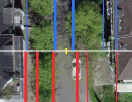
be1 · Gutenbergstrasse (bern)
bez vyměřování: chodnik 5.45* · pruh 3.6 · chodnik 6* · zelen 2.5*
s vyměřováním: pruh 2.3 · zelen 3.2 · pruh 4.65 · chodnik 2 · zelen 5.8
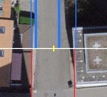
be2 · (bez názvu) (bern)
bez vyměřování: chodnik 0.9* · obsluzna 4.8* · chodnik 3.5*
s vyměřováním: plocha 8.8
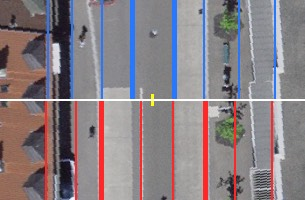
be3 · Stauffacherstrasse (bern)
bez vyměřování: plocha 2.4* · chodnik 3* · nastupiste 3 · pruh 4.2 · nastupiste 3 · chodnik 3.5* · plocha 3.55*
s vyměřováním: plocha 2.95 · nastupiste 2.5 · krajnice 4.01 · pruh 3.22 · pruh 3.21 · nastupiste 3 · plocha 3.65
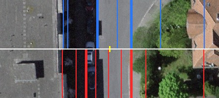
be4 · Schänzlistrasse (bern)
bez vyměřování: zelen 0.85* · chodnik 6* · pruh 4.14 · pruh 2.76 · chodnik 6* · zelen 8.9*
s vyměřováním: zelen 2.75 · chodnik 2.05 · parkovani 2* · pruh 2.57 · pruh 2.57 · parkovani 2* · chodnik 3 · zelen 11.8
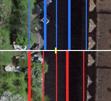
be5 · Badgasse (bern)
bez vyměřování: nezname 3.1* · krajnice 2.27 · pruh 2.58 · chodnik 3.35*
s vyměřováním: pruh 2.75 · pruh 2.57 · parkovani 2.18* · plocha 3.3
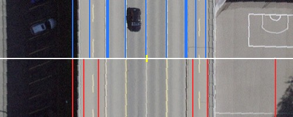
be6 · Monbijoubrücke (bern)
bez vyměřování: chodnik 2.95 · cyklostezka 2.95 · bus 3.17 · pruh 3.5 · pruh 3.5 · bus 3.23 · cyklostezka 1.73 · chodnik 1.73
s vyměřováním: plocha 1.92 · cyklostezka 2.5 · plocha 16.08 · cyklostezka 2.5 · plocha 11.63
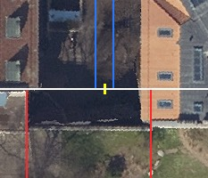
ge1 · (bez názvu) (geneve)
bez vyměřování: chodnik 2*
s vyměřováním: plocha 13.95
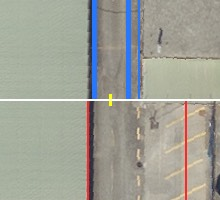
ge2 · (bez názvu) (geneve)
bez vyměřování: pruh 3.4 · chodnik 1.15*
s vyměřováním: plocha 9.85
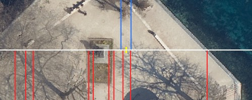
ge3 · (bez názvu) (geneve)
bez vyměřování: chodnik 2*
s vyměřováním: chodnik 2.14 · stromorad 1.5 · chodnik 10.98 · zelen 0.85 · plocha 3.1 · zelen 1.05 · chodnik 1.73 · stromorad 1.5 · chodnik 15.22
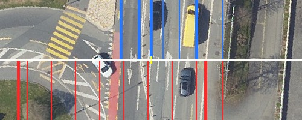
ge4 · Rue François-Dussaud (geneve)
bez vyměřování: pruh 3 · delici 2* · krajnice 1.98 · pruh 2.76 · pruh 2.76 · chodnik 4.39*
s vyměřováním: cyklopruh 1.5 · krajnice 4.01* · pruh 4 · pruh 4 · pruh 4 · pruh 4 · pruh 4 · krajnice 4.01* · cyklopruh 1.5 · chodnik 2.84
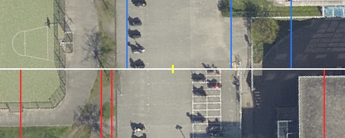
ge5 · Rue Patru (geneve)
bez vyměřování: chodnik 15.08* · zelen 8.75*
s vyměřováním: plocha 11.73 · stromorad 1.5 · plocha 30.77
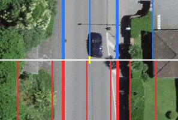
lu1 · Via Ponte Tresa (lugano)
bez vyměřování: pruh 4.5 · pruh 4.5 · chodnik 6*
s vyměřováním: plocha 5.7 · chodnik 1.8 · pruh 4 · pruh 4 · krajnice 1.15* · chodnik 2.05 · zelen 4.3
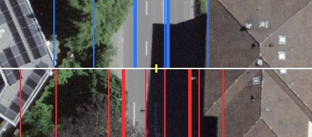
lu2 · Via Giuseppe Lepori (lugano)
bez vyměřování: zelen 5.75* · chodnik 6* · pruh 4.47 · krajnice 0.33 · chodnik 5.9*
s vyměřováním: plocha 5.2 · zelen 7.7 · chodnik 2.05 · pruh 3.37 · pruh 2.8 · krajnice 3.53 · chodnik 1.45 · plocha 3.5
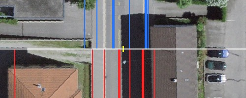
lu3 · Via Trevano (lugano)
bez vyměřování: chodnik 2.5* · bus_cyklo 3.3 · pruh 3.3 · pruh 3.3 · chodnik 0.55*
s vyměřováním: plocha 15.82 · chodnik 2.4 · bus_cyklo 3.02 · pruh 2.18 · pruh 2.6 · chodnik 2.35
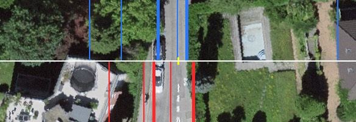
lu4 · Via Comorgio (lugano)
bez vyměřování: zelen 5.15* · chodnik 6* · pruh 3.27 · krajnice 1.43 · zelen 24.8*
s vyměřováním: zelen 5.65 · chodnik 1.65 · pruh 2.82 · pruh 3.68
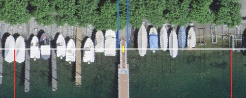
lu5 · (bez názvu) (lugano)
bez vyměřování: chodnik 2*
s vyměřováním: plocha 44
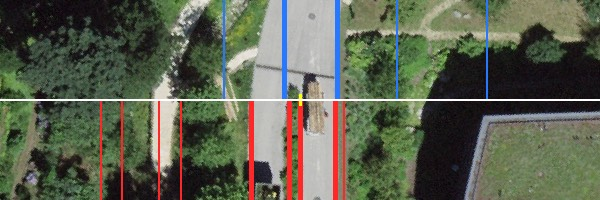
lu6 · (bez názvu) (lugano)
bez vyměřování: zelen 29* · chodnik 6* · obsluzna 5.3* · chodnik 6* · zelen 9*
s vyměřováním: voda 2.1 · zelen 3.65 · chodnik 2.2 · zelen 7 · pruh 3.85 · zelen 1.05 · obsluzna 3.5 · plocha 0.95
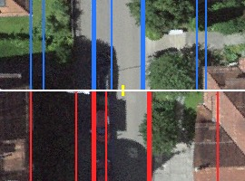
st1 · Hebelstrasse (stgallen)
bez vyměřování: zelen 1.4* · chodnik 5.5* · parkovani 2 · pruh 3.4 · chodnik 6* · zelen 1.05*
s vyměřováním: zelen 5 · chodnik 1.9 · parkovani 1.47 · pruh 4.68 · zelen 7.55
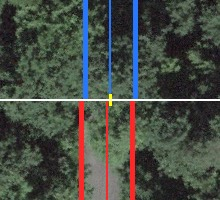
st2 · Hätterenstrasse (stgallen)
bez vyměřování: pruh 2.5 · pruh 2.5
s vyměřováním: pruh 2.52 · pruh 2.52
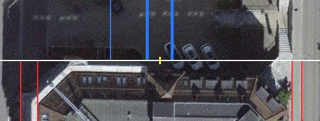
st3 · (bez názvu) (stgallen)
bez vyměřování: chodnik 6* · obsluzna 4.1*
s vyměřováním: chodnik 2.8 · plocha 41.85 · chodnik 1.6
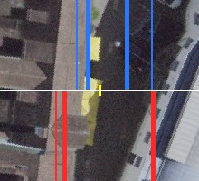
st4 · Hechtgasse (stgallen)
bez vyměřování: plocha 1.15* · pruh 4.3 · plocha 2.85*
s vyměřováním: chodnik 0.95 · pruh 9.75
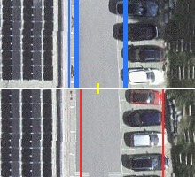
va2 · (bez názvu) (vaduz)
bez vyměřování: chodnik 0.75* · obsluzna 5.5*
s vyměřováním: plocha 9.25
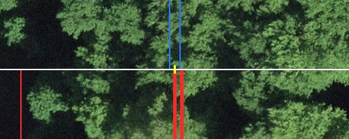
va3 · (bez názvu) (vaduz)
bez vyměřování: chodnik 1.5*
s vyměřováním: zelen 22.03 · pruh 1
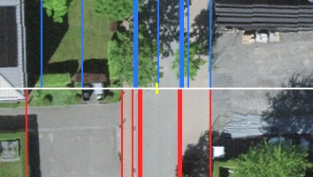
va5 · Auring (vaduz)
bez vyměřování: zelen 4.6* · chodnik 6* · pruh 2.6 · pruh 2.6 · nezname 0.8* · chodnik 2.5*
s vyměřováním: zelen 10.8 · chodnik 1.25 · zelen 0.8 · pruh 4.4 · chodnik 3.5